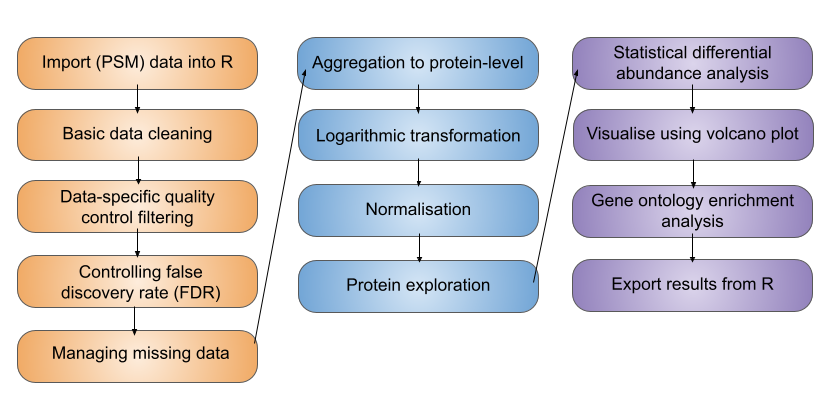

10 Adapting this workflow to label-free proteomics data
Learning Objectives
- Understand how experimental design influences data structure and the required processing steps. In particular, how the analysis of label-free data could differ from that of the TMT use-case data.
The processing and analysis of label-free quantitative proteomics data to discover differentially abundant proteins follows the same overall workflow presented in this course for our TMT use-case.
However, some of the decisions made and exact approaches to each stage may differ when considering label-free data. These decisions are discussed below and summarised in Table 10.1.
| Data processing step | TMT | Label-free |
|---|---|---|
| Import | Import PSM-level data | Import PSM- or peptide-level data, depending on how software outputs quantification data |
| Data cleaning | Standard data cleaning steps | Standard data cleaning steps |
| Quality control filtering | Additional thresholds on reporter ion signal-to-noise ratio, co-isolation interference and SPS mass matches | Additional quality control filters are software-specific and optional |
| Managing missing data | Low proportion of missing values - remove with minimal data loss | Higher proportion of missing values - Don’t impute and use robustSummary summarisation to protein; If required, impute at lowest data level |
| Transformation | Log | Log |
| Summarisation to protein | Summarisation using sum or robustSummary method | Summarisation using robustSummary method |
| Normalisation | Median-based normalisation | Median-based normalisation |
| Statistics | Linear model | Linear model |
10.1 Data import
Note
These notes on data import are an adjunct to the Import and infrastructure section. Please first read through that material, since it includes background and clarifications which are not repeated here.
As outlined in Import and infrastructure, we prefer to import the data into R at the lowest possible level. This allows us to have more control over and understanding of our data processing and analysis. For the TMT-labelled use-case data, the lowest possible level of data for import was the PSM-level. However, the analysis of label-free data often requires us to start one level up at the peptide-level. This is because most identification searches carried out on label-free MS data utilise an algorithm called retention time (RT) alignment, which uses the match between runs (MBR) function.
What problem does retention time alignment address?
Retention time alignment aims to deal with the problem of missing values in label-free data-dependent acquisition (DDA) MS data. Since label-free samples are all analysed by independent MS runs, the stochastic nature of DDA means that different peptides are identified and quantified between samples, hence there are a high number of missing values.
How does retention time alignment work?
Quantification of label-free samples is achieved at the MS1 level. This means that we have potentially useful quantitative information before we have any peptide identification (MS1 before MS2). In cases where a peptide is identified in some samples but not others, it is possible to align the retention times of each sample run and then compare the MS1 spectra. In this way, information can be shared across runs and a peptide identification made in one run can be assigned to an MS1 spectra from a completely independent run, even if this spectrum does not have a corresponding MS2 spectrum.
Why does retention time alignment prevent analysis from PSM level?
The process of RT alignment and MBRs occurs after the process of peptide spectrum matching. First, PSMs are derived from an identification search. This is done independently for each sample. The remaining spectra for which no PSM was identified are then included in the RT alignment algorithm in an attempt to assign an identification. If successful, this means that there may be peptide level data in the absence of PSM level data. Hence, if we used PSM level data for the processing and analysis of label-free data then we would lose out on the benefit of RT alignment.
When to use peptide-level data for label-free analysis?
Label-free data processed using Proteome Discoverer software should be processed from the peptide level. This means that we would use the file called cell_cycle_total_proteome_analysis_PeptideGroups.txt and import using readQFeatures, as outlined in Import and infrastructure. Other third party software, however, may still allow for label-free data to be processed from the PSM level. For example, MaxQuant users can still use the evidence.txt file.
10.2 Data cleaning, quality control filtering and FDR control
Note
These notes on data import are an adjunct to the Data processing section. Please first read through that material, since it includes background and clarifications which are not repeated here.
Many of the basic data cleaning steps that we apply to TMT-labelled quantitative proteomics data are still applicable to label-free data. The following steps should still be completed using the filterFeatures function, as demonstrated in the Data processing section.
Removal of features:
- Without a master protein accession =
filterFeatures(~ Master.Protein.Accessions != "") - Associated with contaminant accessions =
filterFeatures(~ Contaminant == "False") - Lacking quantitative data =
filterFeatures(~ Quan.Info != "NoQuanValues") - Which are not unique (based on user’s definition) =
filterFeatures(~ Number.of.Protein.Groups == 1) - Which are not allocated as rank 1 =
filterFeatures(~ Rank == 1)andfilterFeatures(~ Search.Engine.Rank == 1) - Which are not unambiguous matches =
filterFeatures(~ PSM.Ambiguity == "Unambiguous")
In addition to these data cleaning steps, users may wish to remove features (peptides) which were not quantified based on a monoisotopic peak from their label-free dataset. This can be achieved using filterFeatures(~ Quan.Info != "NoneMonoisotopic").
The three quality control filters applied to the TMT use-case data (Isolation.Interference.in.Percent, Average.Reporter.SN and SPS.Mass.Matches.in.Percent) are TMT-specific and cannot be applied to label-free data.
Protein-level FDR control should be carried out on label-free data in the same way as was demonstrated in the main course materials.
10.3 Managing missing data
Note
These notes on management of missing data are an adjunct to the Data processing section which demonstrates the exploration of missing values within QFeatures. Please first read through that material, since it includes background and clarifications which are not repeated here.
Label-free DDA proteomics data suffers from a greater number of missing values than multiplexed label-based approaches (e.g., TMT). Indeed, this is one of the advantages of multi-plexing samples using TMT as multiple samples (10 in the use-case) can be run simultaneously on the MS and, therefore, the same peptides are selected for analysis across all samples. Since label-free samples are each analysed via independent MS runs, the stochastic nature of DDA MS means that different peptides may be identified and quantified across different runs, thus leading to a higher percentage of missing values.
Management of missing data should still follow the same three steps as discussed in the Data processing section:
- Explore the presence and distribution of missing values
- Filter data to remove features (rows) or samples (columns) with excessive missing values
- Consider the use of imputation
Steps 1 and 2 were outlined in the main course content. For the use-case TMT data we decided to remove all missing values rather than impute, since this would not represent a drastic data loss. For datasets with a higher proportion of missing data, imputation can be considered. However, protein summarisation using an approach that can handle missing values appropriately is likely to be the optimal approach (see Section 10.4).
How can I impute using QFeatures?
Imputation can be achieved within the QFeatures infrastructure using the impute function. To see what imputation methods this function facilitates we can use MsCoreUtils::imputeMethods().
MsCoreUtils::imputeMethods() [1] "bpca" "knn" "QRILC" "MLE" "MLE2" "MinDet" "MinProb"
[8] "min" "zero" "mixed" "nbavg" "with" "RF" "none" For example, to impute using a k-NN method, we would use the following code,
cc_qf <- impute(object = cc_qf,
method = "knn",
i = "psms_filtered",
name = "psms_imputed")
cc_qfWhich imputation method should I use for my data?
Missing values exist in the data for different reasons and these reasons dictate the best way in which to impute. For example, if a value is missing because a peptide is completely absent or present at an abundance below the limit of detection then the most suitable replacement value is arguably the lowest abundance value recorded in the data set (since this represents the limit of detection). Alternatively, if a value is missing because of stochastic technical reasons then it might be more appropriate to replace it with a value derived from a similar peptide. Overall, left-censored methods such as minimal value and limit of detection approaches work best for data that is MNAR (intensity-dependent missing values). Hot deck methods such as k-nearest neighbors, random forest and maximum likelihood methods work better for data that is MCAR (intensity-independent). To confuse the situation further, most data sets contain missing values that are a mixture of MNAR and MCAR, so mixed imputation methods can be applied.
At what stage of the workflow should I impute?
There are two aspects to consider when deciding when to impute:
- Which data level should be imputed - PSM, peptide or protein
- Whether the selected imputation method requires raw or log transformed quantitation data
Missing values can be imputed at any data level e.g., PSM, peptide or protein. However, if missing values are not imputed in lower data levels then users should be aware of how their missing values are treated during summarisation. Data summarisation methods deal with missing values in different ways, either ignoring them, removing them, considering missing values to be zero, or propagating them. Thus, a combined strategy for imputation and summarisation must be arrived at. In general, we advise that where imputation is necessary, it should be completed at the lowest possible data level to maintain transparency and allow users to check that the data structure has not been drastically altered (e.g., by checking summary statistics or plotting density plots pre- and post-imputation). For LFQ, we advise summarisation using the robustSummary method (see Section 10.4), which negates the need to impute missing values.
10.4 Summarisation to protein level
Summarisation of label-free data can still be achieved using aggregateFeatures. If imputation has been completed, there should be no missing values left to influence summarisation.
Here we will use robustSummary, a state-of-the art summarisation method that is able to summarise effectively even in the presence of missing values Sticker et al. (2020). robustSummary directly models the log-transformed peptide-level quantification as being dependent upon the protein-level abundance of the sample plus a peptide-level effect. Thus robustSummary estimates the protein-level abundances within the modelling. This modelling-based approach to protein summarisation can handle relatively sparse data as it only considers the finite data. The only requirement for a peptide to be informative for estimating protein-level abundances using robustSummary is that the peptide be quantified in at least two samples.
Since the robustSummary can handle missing values, it negates the need to impute missing values. Indeed, for LFQ experiments, we recommend not imputing and using robustSummary to summarise to protein-level abundance. As expected, protein-level abundance estimates are less accurate the more sparse the data is, so removal of peptides with excessive missing values may be worthwhile.
10.5 Logarithmic transformation
As discussed in the Normalisation and data aggregation section, logarithmic transformation of the data is required to give our data a Gaussian distribution, as required for downstream differential abundance analysis. This step can happen at any stage of the workflow, depending upon which imputation and summarisation methods are selected. If you impute or summarise the data using a method which requires log transformation, then this step should have been done above. If not, log2 transformation can be completed now.
10.6 Normalisation
The rules when normalising label-free data are the same as the use-case TMT data. See Data normalisation and data aggregation and Using NormalyzerDE to explore normalisation methods for more discussion.
Sticker, Adriaan, Ludger Goeminne, Lennart Martens, and Lieven Clement. 2020. “Robust Summarization and Inference in Proteome-Wide Label-Free Quantification.” Molecular and Cellular Proteomics 19 (7): 1209–19. https://doi.org/10.1074/mcp.ra119.001624.